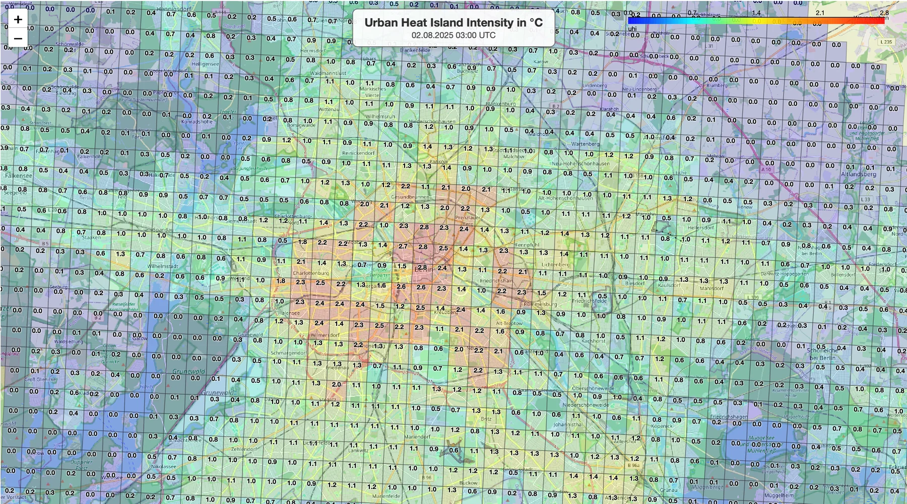

Räumliche AuflösungSpatial resolution
Deutschlandweites Raster in ETRS89 / LCC Europe (EPSG:3034).Nationwide German grid in ETRS89 / LCC Europe (EPSG:3034).
hostrada4py macht die hochaufgelösten stündlichen HOSTRADA-Daten des Deutschen Wetterdienstes für Python zugänglich — vom einzelnen Standort über Karten und Routen bis zur Wetterdatei für die Gebäudesimulation. hostrada4py makes the German Weather Service’s high-resolution hourly HOSTRADA data accessible from Python — from individual locations and maps to routes and simulation-ready weather files.

DWD · Climate Data Center
HOSTRADA steht für hochaufgelöste stündliche Rasterdaten. Der vom Deutschen Wetterdienst veröffentlichte Datensatz ist eine klimatologische Referenz für Deutschland und eine wichtige Grundlage der technischen Klimatologie, unter anderem für die Entwicklung und Aktualisierung von Testreferenzjahren. HOSTRADA stands for high-resolution grids of hourly variables. Published by the German Weather Service (DWD), the dataset is a climatological reference for Germany and an important basis for technical climatology, including the development and updating of test reference years.
Deutschlandweites Raster in ETRS89 / LCC Europe (EPSG:3034).Nationwide German grid in ETRS89 / LCC Europe (EPSG:3034).
Stündliche Werte in UTC, monatlich um neue Daten ergänzt.Hourly values in UTC, extended with new data every month.
Geeignet für historische Analysen, typische Jahre und Extremereignisse.Suitable for historical analyses, typical years and extreme events.
Die Felder basieren überwiegend auf der Interpolation von Messstationsdaten. Je nach Parameter bezieht der DWD zusätzliche Satelliten- und Klimamodelldaten ein, um einen konsistenten Datensatz zu erzeugen. Besonderes Augenmerk gilt der städtischen Wärmeinsel und der Temperaturverteilung in orografisch komplexen Regionen. The fields are mainly based on interpolated weather-station observations. Depending on the parameter, DWD also incorporates satellite and climate-model data to create a consistent dataset. Particular attention is paid to the urban heat island effect and temperature distributions in orographically complex regions.
hostrada4py
Die Bibliothek übersetzt monatliche NetCDF-Raster in handhabbare Python-Workflows für Forschung, Planung und Simulation.The library turns monthly NetCDF grids into practical Python workflows for research, planning and simulation.
Koordinaten, Klimaparameter und Zeitraum definieren — hostradaPoint lädt die benötigten Monatsdateien, findet die passende Rasterzelle und liefert eine stündliche pandas-Zeitserie.Define coordinates, climate parameter and period — hostradaPoint downloads the required monthly files, locates the matching grid cell and returns an hourly pandas time series.
Polygone ausschneiden, räumliche Felder auswerten und als GeoDataFrame, GeoJSON, CSV oder interaktive Karte weiterverarbeiten.Clip polygons, evaluate spatial fields and continue working with the result as a GeoDataFrame, GeoJSON, CSV or interactive map.
Standortbezogene Klimadaten direkt in die benötigten Formate überführen: EnergyPlus (EPW), IDA ICE (PRN), Polysun (CSV) und Modelica BuildingSystems (CSV).Convert location-based climate data directly into the required formats: EnergyPlus (EPW), IDA ICE (PRN), Polysun (CSV) and Modelica BuildingSystems (CSV).
Ordne jedem Wegpunkt und Zeitstempel die passenden Klimawerte zu. So entstehen dynamische Randbedingungen für Fahrzeuge, Bahnreisen, Fahrradrouten oder Fußwege — räumlich und zeitlich interpoliert.Assign matching climate values to every waypoint and timestamp. This creates dynamic boundary conditions for vehicles, rail journeys, bicycle routes or pedestrians — spatially and temporally resolved.
Untersuche Beginn, Maximum und Abklingen von Hitzewellen oder anderen Ereignissen und vergleiche Orte, Variablen und Zeitfenster reproduzierbar.Study the onset, peak and decay of heat waves or other events and compare locations, variables and time windows reproducibly.
pandas, xarray, GeoPandas, Matplotlib, Plotly und Folium verbinden Download, Auswertung, Visualisierung und Export in einem transparenten Workflow.pandas, xarray, GeoPandas, Matplotlib, Plotly and Folium connect download, analysis, visualisation and export in a transparent workflow.
Workflow
hostrada4py übernimmt die wiederkehrenden Schritte zwischen DWD-Archiv und Analyse. Ein lokaler Cache vermeidet unnötige Downloads; optional können räumlich und zeitlich zugeschnittene NetCDF-Teilmengen gespeichert werden.hostrada4py handles the recurring steps between the DWD archive and your analysis. A local cache avoids unnecessary downloads; optional spatially and temporally cropped NetCDF subsets can be stored.
Python API
Die folgenden Beispiele orientieren sich an den Modulen und Notebooks des Projekts.The following examples reflect the modules and notebooks included in the project.
$ git clone https://github.com/UdK-VPT/hostrada4py.git
$ cd hostrada4py
$ pip install -e .
from hostrada4py import hostradaPoint as hp
df = hp.extract_values_for_point(
var="tas",
lon=13.405,
lat=52.520,
start="2025-07-01 00:00",
end="2025-07-07 23:00",
)
print(df[["time", "tas"]].head())from hostrada4py import hostradaArea as ha
berlin = [
(13.09, 52.34),
(13.76, 52.34),
(13.76, 52.68),
(13.09, 52.68),
]
gdf = ha.extract_values_for_polygon(
var="uhi",
polygon_lonlat=berlin,
start_utc="2025-08-02 03:00",
end_utc="2025-08-02 03:00",
return_geodataframe=True,
)from hostrada4py import hostrada_EnergyPlus_Weather as epw
epw.create_energyplus_weather_file(
lon=13.405,
lat=52.520,
start="2025-01-01 00:00",
end="2025-12-31 23:00",
output_file="HOSTRADA_Berlin.epw",
tz="Europe/Berlin",
)from hostrada4py.hostradaRoute import calculate_route_climate
result = calculate_route_climate(
route="route_positions.csv",
variables=["tas", "hurs", "sfcWind"],
timezone="Europe/Berlin",
interpolation="linear",
output_csv="route_climate.csv",
)from hostrada4py import hostradaPoint as hp
from hostrada4py import hostrada_HeatPeriodsGermany as heat
event = heat.heat_periods_germany["events"][0]
site = event["measurement_sites"][0]
df = hp.extract_values_for_point(
var="tas", lon=site["longitude"], lat=site["latitude"],
start=event["core_period"]["start"],
end=event["core_period"]["end"],
)Kontakt & EntwicklungContact & development
hostrada4py wird am Fachgebiet Versorgungsplanung und Versorgungstechnik der Universität der Künste Berlin entwickelt. Beiträge, Issues und fachlicher Austausch sind willkommen.hostrada4py is developed by the Chair of Building Services Engineering at Berlin University of the Arts. Contributions, issues and professional exchange are welcome.
E-Mail schreibenSend an email
Fachgebiet Versorgungsplanung und Versorgungstechnik
Chair of Building Services Engineering
Institut für Architektur und Städtebau
Institute of Architecture and Urban Planning
Universität der Künste Berlin
Rechtliche AngabenLegal information
Körperschaft des öffentlichen Rechts
gesetzlich vertreten durch den Präsidenten Prof. Dr. Markus Hilgert
Prof. Dr. Markus Hilgert
Corporation under public law
legally represented by the President, Prof. Dr. Markus Hilgert
Prof. Dr. Markus Hilgert
Die Universität der Künste (UdK) Berlin übernimmt keine Gewähr für die Aktualität, Richtigkeit und Vollständigkeit der auf dieser Website bereitgestellten Angaben. Dies gilt im besonderen Maße für die Inhalte externer Internetseiten, auf die über Hyperlinks direkt oder indirekt verwiesen wird und die von der UdK Berlin nicht beeinflusst werden können. Die von den Fakultäten, Instituten und weiteren Einrichtungen unterbreiteten Angebote unterliegen der Verantwortung der jeweiligen Bereiche.
Der Inhalt dieser Website ist urheberrechtlich geschützt. Die Vervielfältigung oder Verbreitung der auf dieser Seite bereitgestellten Informationen bedarf der vorherigen schriftlichen Genehmigung durch die UdK Berlin.
Berlin University of the Arts (UdK Berlin) accepts no liability for the timeliness, accuracy or completeness of the information provided on this website. This applies in particular to content on external websites referenced directly or indirectly through hyperlinks and over which UdK Berlin has no control. Content provided by faculties, institutes and other organisational units is the responsibility of the respective unit.
The content of this website is protected by copyright. Reproduction or distribution of the information provided on this page requires the prior written permission of UdK Berlin.